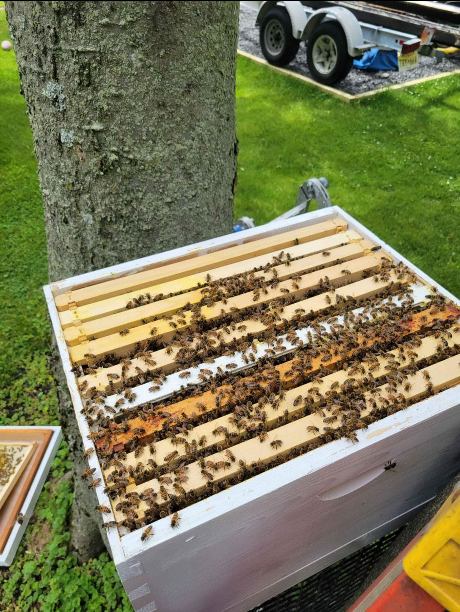

Raw Honey is Un-bee-liveable

image by Sarai Ojeda
By Sarai Ojeda | March 29, 2026
Ever wonder why people decide to buy local honey rather than store-bought?
Well, there are many reasons why! Honey has been used as a remedy for many issues across history.
There is much research that implies that law honey has many health benefits and medical uses. This is why many tend to turn to raw honey as opposed to store-bought.
When you buy store-bought honey, it is very filtered and pasteurized, stripping a lot of the beneficial nutrients and antibacterial properties you’d find in raw pure honey.
One of the biggest benefits of raw honey is its high antioxidant content. These antioxidants help protect your body from damage caused by free radicals, which are linked to aging and diseases
like heart disease and cancer. Because raw honey isn’t exposed to high heat during pasteurization, it is able to retain more of these helpful compounds. In contrast, store-bought honey often goes through
heating and filtering processes that reduce its overall nutritional value.
Another important benefit of raw honey is its natural antibacterial and antifungal properties. For years, honey has been used as a home remedy for soothing sore throats, calming coughs, and even helping wounds heal.
Raw honey is especially effective in this way because it still contains the enzymes and compounds that give it these healing properties. When honey is processed, many of these beneficial elements are either reduced or
completely removed, making it less effective for these uses.
Store-bought honey is often highly filtered to improve its appearance and extend its shelf life, but this can remove important nutrients like pollen. In some cases, processed honey may even contain added sugars or syrups, which removes
from its natural quality and can make it less healthy overall. Raw honey, on the other hand, is typically free from these additives, giving consumers more confidence in what they are eating.
Despite raw honey having multiple benefits, there are some downsides that would make store-bought a better alternative. One of these is that it is not recommended for infants to eat raw honey. This can cause infant botulism which happens
if raw honey contains Clostridium botulinum spores and causes a rare but serious, potentially fatal illness in infants. It is also not recommended for people who have a weak immune system, due to the potential contamination and raw pollen,
which can be harsh to some. That being said, be aware of the potential risks and make sure to buy raw honey from reputable beekeepers to ensure quality and make sure it is stored in an airtight container.
Overall, raw honey is considered a better option than store-bought because it maintains more of its natural nutrients, antioxidants, and healing properties. Though both options are fairly good, raw honey provides added health benefits and a more natural product, which is why many people choose it over the processed alternative.
Is BeeKeeping Worth it? : Review for Beginners

image by Sarai Ojeda
By Sarai Ojeda | March 29, 2026
Have you ever wondering if beekeeping is something you’d want to get into? A lot of people like the idea of beekeeping for many reasons, and I was too. It seemed like a peaceful and relaxed hobby,
but once you start looking more into it and all that it entails, there’s a lot more than goes into what beekeeping is and the responsibilities.
One of the biggest reasons people start beekeeping is for the benefits. Of course, the obvious one is honey. Having your own fresh, raw honey feels rewarding and tastes way better than anything store-bought.
Honey is not the only thing you can get out of bees, you can also make your own candles, soaps, and even lip balm and beer! On top of that, bees help with pollination, which can improve gardens and crops significantly, which is actually a huge
reason why many people start. Some people just want to help the environment and support declining bee populations.
That being said, beekeeping definitely has its downsides. One of the biggest things beginners don’t realize is the cost. Starting a single hive can cost anywhere from about $400 to $650 when you include equipment and bees. You also have to buy protective gear, tools, and possibly honey extraction equipment,
which can add even more to the total. Even after you get started, maintenance costs like feeding, treatments, and repairs can run anywhere from $150 to $500 per year. From what I’ve seen, it’s not really a “cheap hobby” at all, especially in the beginning.
Another thing to consider is the time and effort. Beekeeping isn’t something you can just set up and ignore. You have to regularly check your hive, watch for diseases, and make sure your bees are healthy. There’s also a learning curve, especially for beginners who have never worked with bees before.
And of course, getting stung is part of the experience. It’s not the end of the world, but it’s definitely something you have to be okay with. I personally had started this experience with fear of bees but as I’ve gotten used to beekeeping and bees in general, the fear has slowly decreased.
I’ve also heard from people who’ve actually tried it, and their experiences are pretty mixed. Some say it becomes a really fulfilling hobby over time, especially once you start harvesting honey or even selling it. Others say it takes a few years just to break even and that it’s more about enjoyment
than profit at first.
There are also some restrictions depending on where you live. Certain towns or neighborhoods have rules about keeping bees, like how many hives you can have or where they can be placed. So it’s not something you can always just start in your backyard without checking local regulations first.
Overall, beekeeping can definitely be worth it and fun, but it depends on what you’re looking for. If you want a relaxing, rewarding hobby and don’t mind the cost and effort, it can be an amazing experience. But if you’re expecting quick money or something super easy, it might not be what you think.